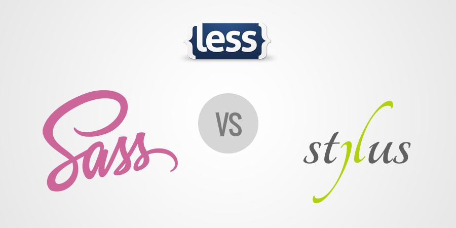
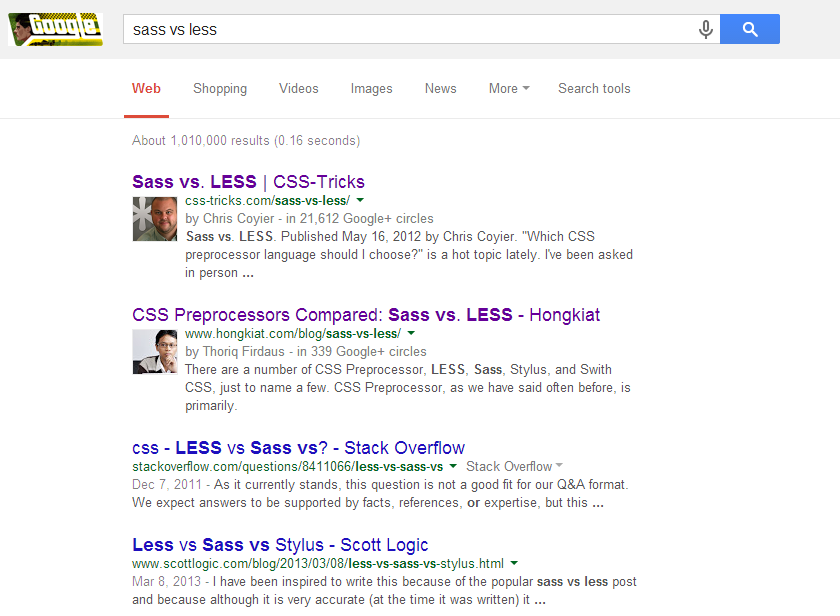
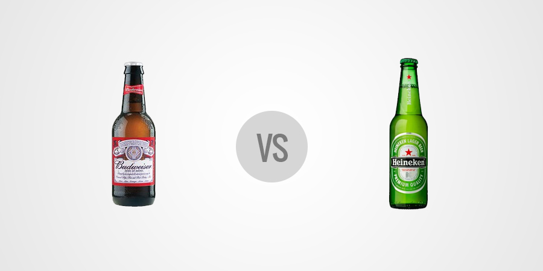
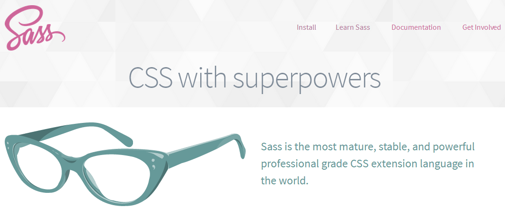
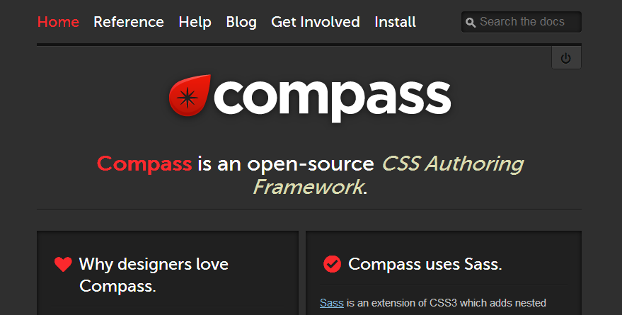

Introduction to CSS Preprocessors
Honestly... Just SaSS
by Lucas Torres
Our staff
You can be part of our staff!
inQbation is looking for two great developers
- HTML, CSS and Js lover? You can be our next Front-end developer
- Enjoy coding in Python, PHP and Drupal? Then the back-end developer spot could be yours
About me

Lucas Torres
Web Developer at inQbation
About me
- Python, PHP
- HTML, CSS, JavaScript
- Drupal
- Crazy about UX and User Centered Design
- Playing with Node.js and MongoDB
What are CSS Preprocessors?
From Wikipedia:
...a preprocessor is a program that processes its input data to produce output that is used as input to another program.So, a CSS preprocessor receive some instructions and compile them to .css files
And what can I do with them?
Have you ever dream about using the advantages of a programming language with CSS? Well, that's what we are able to do with CSS preprocessors.
Use variables, functions, mixins, and more.
Which one should I choose?
There are many CSS Preprocessors
Which one should I choose?
I can't compete with more than 1 million results from Google ;)
Which one should I choose?
So, as with beer: Choose the one that tastes better for you
My personal taste is SaSS
And in beer is Modelo Especial ;)
Main differences: SaSS Vs. Less
Less
//Variables
@main_color: #000;
//Nesting
p {
color: @main_color;
a {
text-decoration: underline;
}
}
//Mixins
.shaded-box {
box-shadow: 2px 2px 0px #000;
}
//Functions
/* 404 not found :( */
SaSS
//Variables
$main_color: #000;
//Nesting
p {
color: $main_color;
a {
text-decoration: underline;
}
}
//Mixins
@mixin shaded-box {
box-shadow: 2px 2px 0px #000;
}
//Functions
@function some-function($arg) {
@return $arg;
}
SaSS superpowers
- Variables
- Nesting
- Partials & Import
- Mixings
- Extend/Inheritance
- Operators
- And yes, functions!
Enough talking man, show me the code!
Since we don't have enough time to learn SaSS features from basics to advanced, I'll show the coolest ones so you can research deeper later.
You can go to http://sass-lang.com/documentation to learn more
Lets start with a simple css like this
h1 {
font-size: 20px;
color: #666;
}
p {
color: #666;
}
.content {
overflow: hidden;
background-color: #F6F6F6;
}
.content h1 {
font-size: 18px;
color: #333;
}
.content p {
font-size: 12px;
text-shadow: 1px 1px 0 #000;
color: #333;
}
.content p a {
color: #666;
text-decoration: none;
}
Now, the same code, written in SaSS. Let's begin with variables
//You can define variables.
//BTW, comments like this won't compile in your CSS
$main_fg_color: #666;
$secondary_fg_color: #333;
h1 {
font-size: 20px;
color: $main_fg_color;
}
p {
color: $main_fg_color;
}
.content {
overflow: hidden;
background-color: #F6F6F6;
}
.content h1 {
font-size: 18px;
color: $secondary_fg_color;
}
.content p {
font-size: 12px;
text-shadow: 1px 1px 0 #000;
color: $secondary_fg_color;
}
.content p a {
color: $main_fg_color;
text-decoration: none;
}
SaSS allows you to use variables, so you can stick to the DRY principle and keep the code simple and easy to maintain.
What about nesting?
/*
* You can nest your selectors.
* and guess what?
* Yes! this comment will be compiled to your CSS
*/
$main_fg_color: #666;
$secondary_fg_color: #333;
h1 {
font-size: 20px;
color: $main_fg_color;
}
p {
color: $main_fg_color;
}
.content {
overflow: hidden;
background-color: #F6F6F6;
h1 {
font-size: 18px;
color: $secondary_fg_color;
}
p {
font-size: 12px;
text-shadow: 1px 1px 0 #000;
color: $secondary_fg_color;
a {
color: $main_fg_color;
text-decoration: none;
}
}
}
You can nest selectors, just as in HTML.
Make sense, right?
Talking about easy to maintain, let me introduce you partials & import
_text.scss
p {
color: #333;
a { color: #000; text-decoration: none; }
}
main.scss
@import "text";
SaSS won't compile any file with an underscore at the beginning (that's a partial), and the @import directive would import (duh!) that file.
Want so see some real action? Ok, let's check the
Mixins
Mixins
Reuse instead of rewrite, that should be the definition of Mixins.
//Define de Mixin properties
@mixin shaded-box {
-webkit-box-shadow: 2px 2px 0px rgba(0, 0, 0, 0.75);
-moz-box-shadow: 2px 2px 0px rgba(0, 0, 0, 0.75);
box-shadow: 2px 2px 0px rgba(0, 0, 0, 0.75);
padding: 5px;
}
//Apply the Mixin
.content {
background-color: #F6F6F6;
@include shaded-box;
}
Mixins with arguments
They look like functions, but they are not. (isn't it a superpower?)
//Define de Mixin properties
@mixin shaded-box( $blur, $opacity ) {
-webkit-box-shadow: 2px 2px $blur rgba(0, 0, 0, $opacity);
-moz-box-shadow: 2px 2px $blur rgba(0, 0, 0, $opacity);
box-shadow: 2px 2px $blur rgba(0, 0, 0, $opacity);
padding: 5px;
}
//Apply the Mixin
.content {
background-color: #F6F6F6;
@include shaded-box( 2px, 0.75 );
}
Functions
No more child games! Let's use CSS as a programming language
@function set-background($img: false, $color: #F4F4F4)
{
@if $img != false {
@return #{$color} url(#{$img}) no-repeat left top;
}
@else {
@return #{$color};
}
}
.container {
background: set-background("photo.png", #000);
}
Not an useful function, but.. it's a function inside CSS!
Control Directives
I bet you saw the @if statement in the last slide, well, there is more for you.
//Create a quick grid
/* Number of columns */
$columns: 12;
@for $i from 1 through $columns {
.col-#{$i} {
width: (100% / $columns) * $i;
float: left;
}
}
You can use @if, @else if, @else, @for, @each and @while
Control Directives
Now, the same grid but using a function
@function get-col-width($width, $columns, $number){
@return ($width / $columns) * $number;
}
$columns: 6;
@for $i from 1 through $columns {
.columns-#{$i} {
width: get-col-width(960px, $columns, $i);
@if $i < $columns {
float: left;
}
@else {
float: right;
}
}
}
Wait! It gets even better!
Reinventing the wheel is not nice...
You can reuse Compass mixins, functions and more.
Compass
A brief example with Compass
Gist http://sassmeister.com/gist/9773018
And let's proceed with some questions.